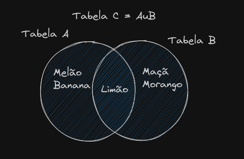
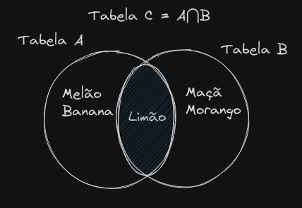
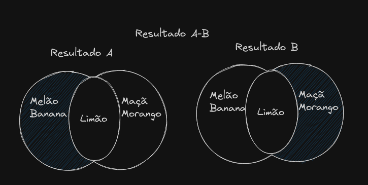

O modelo conceitual do banco de dados é uma representação simples.
Trata-se de uma representação gráfica das estruturas (tabelas) do banco
de dados, em que é possível identificar todas as relações e restrições e
suas demais características.
A modelagem começa com a compreensão do ambiente real, com escopos e
objetivos bem definidos. Equivale a uma planta baixa, com todas as
instruções para a contstrução de um banco de dados.
O modelo conceitual mais utilizado atualmente é o Diagrama
entidade-relacionamento (DER)
Técnicas de levantamento de
dados
O levantamento de dados é uma forma de mapeamento, seu principal
objetivo é permitir conhecer as necessidades da aplicação. Utiliza-se as
técnicas:
Observação direta ou pessoal
Vivenciar o dia a dia do problema que a solução busca resolver.
Obtemse confirmação sobre informações recebidas
Questionário
Instrumento preparado para levantar determinadas informações. O
questionário pode ser aberto ou fechado: o fechado apresenta questões de
multipla escolha, enquanto o aberto permite que o os participantes
respondam questões de acordo com seu entendimento.
Entrevista
Assim como o questionário a entrevista apresenta perguntas, no
entanto essas perguntas podem ser modificadas ou adaptadas no decorrer
da aplicação do instrumento
Analise de documentação
Essa técnica consiste na analise de documentos já existentes que
denotam a organização de uma rotina. As informções obtidas serão
norteadoras para o desenvolvimento dos requisitos e caracteristicas do
projeto de banco de dados
Levantamento e
especificações de requisitos
A partir do levantamento de dados é possível construir as
especificações e requisitos que um software deve atender.
Um bom requisito deve endereçar uma necessidade direta ou indireta
dos futuros usuários do sistema a ser desenvolvido.
A prática recomendada é sempre documentar, organizar e disponibilizar
os requisitos a todos os envolvidos no projeto, garantindo que seu
entendimento seja compartilhado entre todos, ou seja, clientes e equipe
responsável pelo projeto.
Existe uma variedade de tipos de requisitos, estes devem estar
relacionada as funcionalidades esperadas para o sistema e seu
desempenho, seguraça e confiabilidade de informações. Quando se trata de
projeto de desenvolvimento de softwares, os requisitos dividem-se em
requisitos funcionais e não funcionais.
Há várias formas de documentar e disponibilizar requisitos. Uma
dessas ferramentas de documentação é o DER que monta as entidades e os
relacionamentos entre elas. Outra são os diagrams UML (unified modeling
language)
Dicionário de dados
O dicionário de dados fornece uma descrição detalhada entre todas as
tabelas encontradas no banco. O dicionário é um documento de texto que
centraliza informações sobre todo o conjunto de dados. Ele contem no
minimo todos os nomes e caracteristicas dos atributos de cada uma das
tabelas do sistema
Importancia da dicionarização
Quando ocorre a transformação de uma informação para dados esses
dados pode ser reutilizados por outras pessoas ou sistemas, mas
especificidades essenciais para a compreensão desses dados podem se
perder.
O Dicionário de dados deve documentar de forma objetiva e acertiva
toda a informação contida no banco e da situação em que foi extraida,
permitindo a compreensão dos dados armazenados.
Problema típico da dicionarização
Situações onde há dados disponiveis porém esses dados não são
interpretáveis. Os dicionários resolvem esses problemas pois especificam
os significados de cada informação contida no banco.
Exemplo de dicionário de dados:
Nome da tabela
Atributo
Conteudo
Tipo
Formato
Faixa
Necessário
PF/FK ou UK
Tabela referenciada
Consumidor
Nome
Nome do consumidor
Varchar(200)
XXXXXX
S
Endereço
Endereço do consumidor
Varchar(200)
xxxxxxxx
CPF
CPF do consumidor
CHAR(14)
999.999.999-99
S
pk
Arquitetura de arquivos de
dados
A arquitetura de dados define um conjunto padrão de produtos e
ferramentas que uma organização usa para gerenciar dados.
Um fator imporante do desempenho de um banco de dados é o seu
mecanismo de armazenamento, mais especificamente suas tabelas.
Diferentes tipo de armazenamento podem fornecer mais desempenho em uma
situação do que em outras
Os tipos mais comuns de armazenamento são o MyISAM (Utilizado pelo
MySQL) e o InnoDB (mecanismo alternativo integrado ao MySQL para bancos
de dados de alto desempenho)
Para entender a defiferença é imporante entender o conceito de
Bloqueio.
Bloqueio
Sistema de proteção da integridade de dados
Significa proteger dados para não serem modificados por nada além da
requisição que gerou o bloqueio
MyISAM vs InnoDB
Existem diverças formas de bloqueio sendo as mais conhecidas o
MyISAM e o InnoDB
Bloqueio de tabela (MyISAM):
Bloqueia a tabela inteira quando uma ou mais celulas precisam ser
alteradas ou excluidas, é o bloqueio padrão do MyISAM
Bloqueio de linha (InnoDB):
Bloqueia um range de linhas enquanto uma ou mais celulas dentro do
range são alteradas ou excluidas. Bloqueio do InnoDB
Um aplicativo ou site que contém uma tabela utilizada com frequência
funciona excepcionalmente bem empregando-se o mecanismo de armazenamento
InnoDB, resolvendo gargalos de bloqueio de tabela. No entanto, a questão
de usar um sobre o outro é subjetiva, pois nenhum deles é perfeito em
todas as situações. Existem pontos fortes e limitações para ambos os
mecanismos de armazenamento.
MyISAM
Supera o InnoDB em tabelas grandes que requerem mais atividade de
leitura do que de gravação (Novos itens, alterações ou exclusões)
É mais rapida na medida em que bloquear a tabela toda demanda menos
poder computacional do que descobrir quais linhas devem ser
bloqueadas.
Melhor utilizado em tabelas grandes que não alteram seus dados com
frequência
InnoDB
Supera o MyISAM quando os dados de uma tabela são alterados
frequentemente. Alterações na tabela gravam dados mais rapido do que a
leitura deles acontece por segundo.
Dessa forma o InnoDB pode acompanhar grandes quantidades de
solicitações pois bloqueia apenas algumas linhas ao invés de bloquear
toda a tabela e portanto pode executar mais de uma alteração por
vez
Teoria de conjuntos
Ramo da matemática que estuda conjuntos e o comportamento de uma
coleção de conjuntos.
A relação basica entro um conjunto que o elemento que o compõe é
chamada de relação de pertinência, ou seja, decidir se
um elemento pertence ou não a um conjunto.
Se o elemento x pertence ao conjunto A temos:
x ∈ A
Se o elemento x não pertence ao conjunto A temos:
x ∉ A
O conceito de pertencimento é a teoria para extração de
informações do banco de dados. As principais operações de conjunto
aplicadas são União, Intersecção, e
Diferença
União, Intersecção e
Diferença
Para compreender as operações de conjuntos utilizaremos como
exemplo as tabelas:
Tabela A:
| id | Produto |
1
Melão
2
Banana
3
Limão
Tabela B:
| id | Produto |
1
Maçã
2
Morango
3
Limão
União
Permite que todos os elementos de um conjunto A e B sejam unidos
(agrupados), em um banco de dados podemos buscar as informações de todas
as tabelas pertencentes aos grupos inunidos.
Formalmente a definição de união é:
A∪B = {x:x ∈ A ou x ∈ B}
Dissecando: conclui-se que o grupo formado pela união entre A e B
deve ser formado por qualquer membro presente em A ou em B
Exemplo:
Tabela A∪B:
| id | Produto |
1
Melão
2
Banana
3
Limão
4
Maçã
5
Morango
Assim temos

Intersecção:
Em uma intersecção os apenas os elementos comuns a todos os
conjuntos são selecionados.
Formalmente temos
A⋂B = {x:x ∈ A e x ∈ B}
Dissecando: Conclui-se que o Conjunto A⋂B deve ser formado apenas
por elementos pertencentes tanto a A quanto a B
Utilizando as tabelas temos como exemplo:
Tabela A⋂B:
| id | Produto |
1
Limão
Assim temos:

Diferença (Complemento)
Essa operação permiote selecionar apenas elementos que pertencem
apenas a ambos os conjuntos mas que não aparecem em ambos os conjuntos,
gerando dois novos conjuntos sem a interseção entre eles
Formalmente temos:
A - B = {x:x∈A e x∉B}
Utilizando as tabelas temos duas tabelas:
Tabela A-B resulta em:
Produto 1:
| id | Produto |
1
Melão
2
Banana
Produto 2:
| id | Produto |
1
Maçã
2
Morango
Sendo os resultados:

A area pintada de cada resultado corresponde a tabela
retornada da operação A - B
Tipos de dados:
Em SQL cada campo (ou celula) de uma tabela deve ser preenchida com
o um tipo de dado especifico. Isso significa que bancos de dado SQL são
fortemente tipados.
Os principais tipos em SQL são:
Numéricos:
Smallint:
É um número inteiro de 16 bits, que permite representar até 65.535
números, entre positivos e negativos.
int ou Integer:
É um número inteiro de 32 bits, que permite representar até
4.294.967.295 números, entre positivos e negativos.
BigInt:
É um número inteiro de 64 bits, que permite representar até
18.446.744.073.709.551.615 números, entre positivos e negativos.
Real:
É um número fracionário de precisão simples, ou seja, ocupa o
tamanho máximo de 32 bits. (float, ver Introdução ao
Java: Variaveis)
Decimal
É um número fracionário com casas decimais exatas, ou seja, pode-se
controlar exatamente a quantidade de casas inteiras e decimais de um
número. A declaração decimal (10,2), por exemplo, indica que há dez
dígitos de representação numérica, porém dois deles servirão para a
parte fracionária do número.
Alfanuméricos:
Char: Alocação fixa de quantidade de caracteres a serem armazenados.
Exemplo: Se tenho um CHAR(200) e a palavra escrita for "Teste" ainda
assim 200 posições na memória serão ocupadas.
Varchar: Faz alocação variavel de memória para a quantidade de
caracteres escrita. Isso é se temos um Varchar(200) isso significa que o
tamanho máximo que o campo pode assumir são 200 caracteres, no entanto,
se a mesma palavra "Teste"for gravada no campo ele consumirá apenas o
espaço de 5 caracteres, comprimindo o resto.
Dados de tempo
Date - Utilizado para armazenar datas no padrão americano:
YYYY-mm-DD
Time - Utilizado para armazenar horas no padrão americano:
HH-MM-SS
Outros
tipos de dados que eu sei que existem (extra-texto)
BOOL: Armazena 1 bit: 0 ou 1 / Verdadeiro ou falso
De certa forma um tipo numérico
JSON em postgreSQL: Armazena JSON
De certa forma um tipo Varchar
FILE: Armazena um caminho para um arquivo
De certa forma um tipo Varchar
Integridade referencial
A integridade referencial está ligada a toda garantia de que um valor
que aparece em uma relação para determinado conjunto de atributos também
apareça para certo conjunto de atributos em outra relação.
Integridade refencial é um recurso de design que impede que sejam
inseridos dados inconsistentes em um banco de dados.
A maioria dos Bancos de dados relacionais possuem regras de
integridade refencial que se aplica ao criar relações entre
tabelas.
Regras de chave mantem a integridade referencial de uma tabela
através da ligação das colunas que receberam uma chave e a validação dos
valores que podem ser inseridos.
Comportamente dos
campos compostos por chaves:
Primary Key:
Uma chave primária é uma regra implementada em uma coluna que
garante que os valores inserido ali nunca se repitam. Serve como um
indentificador único do campo em sua tabela.
Unique key (alternatives ou candidatas):
Colunas que naturalmente recebem valores unicos mas que podem estar
fora das regras da chave primária, por exemplo um campo como "CPF".
Sabe-se que cada brasileiro possui um CPF único, no entanto esse campo
não será uma chave primária (chave de identificação no sistema). Garante
que nenhuma outra entrada com o mesmo valor seja criado.
Foreign key:
Uma foreign key - ou chave estrangeira - é um valor que pode
determinar o comportamento de uma ou mais colunas, fazendo com que elas
referenciem os valores existentes em uma chave primária. Dessa forma
toda coluna que recebe a regra de chave estrangeira deve ter recebido a
regra de chave primária em sua tabela de origem. Isso permite
estabelecer relações entre duas tabelas do banco de dados
Consequências
da falta de integridade referencial
A falta de integridade pode levar a retorno de dados incompletos ou
equivocados sem indicação de erro.
Exemplo (feito por mim)
Suponha que em um sistema é necessário buscar todas as compras
feitas por um cliente chamado João José e possuimos as seguintes tabela:
Clientes:
Nome
Sobrenome
CPF
João
José
123456789-00
João
José
xxxxxxxxx-zz
Vendas:
produto
Cliente
Cerveja
José
Carne
José
Perceba que como há dois clientes com o mesmo nome é impossivel
saber nesse caso qual cliente comprou o que, apenas que dois cliente com
sobrenome José compraram produtos diferentes, ou que apenas um cliente
chamado josé comprou ambos os produtos.
Mecanismo para
integridade referencial
Para exemplos utilize as tabelas:
Tabela A: Clientes
| Id | Nome | Ramo |
1
ABC
Mercado
2
XYZ
Restaurante
Tabela B: Vendas
| ID | produto | valor | clienteid |
1
Carnes
1000
1
2
Queijos
3000
2
3
Vinhos
500
1
Cascade:
A exclusão de um registro pode causar a exclusão de registros de
chave estrangeira correspondentes.
Nesse caso suponha que a empresa ABC não é mais um cliente, e
gostariamos de exclui-la do bando de clientes. Os registros de venda
feitos para essa empresa também serão excluidos, o que no caso não é
muito interessante.
No entanto suponha que a tabela A corresponde a Jogadores e a Tabela
B corresponda a seus inventários e que um jogador resolva excluir sua
conta. Nesse caso não é interessante que um inventário permaneça no
banco por em referenciando jogador nenhum.
No action - Nenhuma ação:
Esse metedodo apenas proíbe a exlclusão de registros se houver
regisstros de chave dependetes desse registro.
Dessa forma se tentarmos excluir a empresa ABC dos nossos registros
um erro será retornado dizendo que outras chaves dependem do registro de
ABC. Seria o ideal para o caso de um registro de vendas.
Set Null - defina nulo:
A exclusão de um registro pode fazer com que apenas a coluna de
chave estrangeira correspondente seja definida para nulo.
No caso se Exlcuirmos a empresa de ID 1 na tabela A os registros na
tabela B que possuem como clienteid o valor 1 continuam a
existir, no entanto ficam sem valor. Ideal para um survey por, exemplo:
Perguntamos a todos os usuários de uma plataforma como eles avaliam
o serviço. Mas logo depois de responder um deles exclui sua conta. A
resposta dele segue relevante, no entanto não há mais necessidade de
mante-lo nos registros de bancos de dados
Set default (conjunto Padrão):
Faz o mesmo que o Set Null porém ao invés de apenas anular o campo o
retorna para um valor padrão definido préviamente.